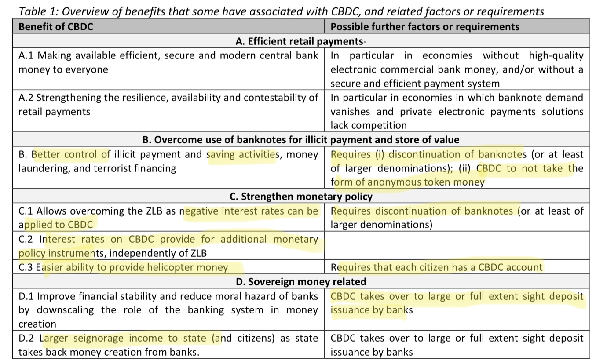

Bitcoin als
Open Source Geldsystem
Frankfurt School Blockchain Center
–
15.07.2021
Dennis Reimann
–
@_d11n_
Geld ist neben Sprache das wichtigste (Aus)tauschmedium
Geld wird digital
Staatliche Zentralbank-Digitalwährungen (CBDC)
Privatwirtschaftliche Initiativen (Diem)
Ein offener Markt und
„Das Geld der Leute“

Transparenz und Partizipation
Offenheit und Innovation
Freiheit und Selbstbestimmung
Transparenz und
Partizipation
Offenheit und
Innovation
Freiheit und Selbstbestimmung

Wohin geht
die Reise?
I’m sure that in 20 years
there will either be very
large transaction volume
or no volume.
Satoshi Nakamoto